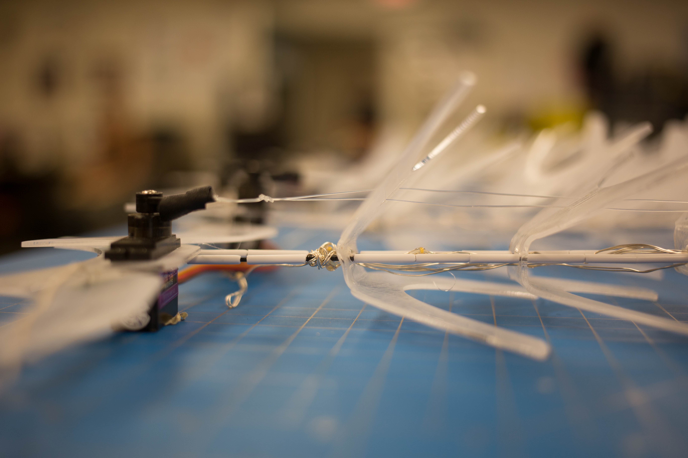

SKRT

Moving the personal bubble.
SKRT is a physical representation of one’s personal bubble. It is a critical design piece to foster conversation around personal space - what it means to different individuals and its definition as a physical or virtual space. Sensors on the wearable will detect when someone is too close to the wearer and trigger SKRT to expand, a concept of protecting the wearer’s personal bubble.

Personal space is an invisible yet ubiquitous force that we understand as we observe a culture over time. For example, every time I take BART (the Bay Area subway), I notice that people avoid sitting next to a stranger unless the subway is crowded. In California, sitting right next to a stranger seems like a violation of personal space.
The personal bubble concept is also attacked and exaggerated by different social expectations. For example, feminists argue that women are constantly interrupted by a man’s physical presence through the spreading of their legs ("manspreading"). This physical sign of dominance, whether intentional or not, forces the woman into a smaller space. Others add that personal space is decreasing outwardly but increasing inwardly. Personal space exists internally because of the smartphone. These devices force users to not be aware of their context and only focus on matters occurring privately within the palm of their hands.

Manspreading on public transit. Banned in NY as of January 2015.
Our intention was to neither attack nor exaggerate the personal bubble. Instead, we created a physical
bubble that not only defined the wearer’s boundaries but also intruded into others’. In doing so, we fostered conversations around physical space.
People discussed issues from cultural sensitivities to those of sexual harassment. Watch our product video below!
Features
Modular Structure
SKRT is made up of a belt and leaves consisting of laser cut acrylic pieces strung together by carbon fiber and fishing wire. This makes it really easy and inexpensive to add or remove pieces for customized fit and repair.

Automated Feedback
Sonar sensors detect when someone is within the wearer's personal bubble and instantly trigger motors on the belt to rotate and pull the fishing line attached to each leaf. This is what enables each leaf to curl up and SKRT to “expand” in response to an intrusion of personal space.

Sensory Engagement
When SKRT expands, it pushes people away but also draws them closer. This is due to SKRT’s intriguing and highly sensory response. Lights interweaved in SKRT flicker in sync with the leaves movements which also create an ethereal rattling sound.

Elegant Finish
Each acrylic piece is precisely laser cut and bent to line up cleanly when strung and overlayed. Each piece is carefully frosted to allow the electronics to peak through without being distracting. It is a simple touch that transforms the personality of the wearable from something very “tech” to one that is more fashionable and human. The frost finish in addition to the choice of small, round lights contributes to a delicate and elegant feel.

Photo/video credits to our team
member and photographer Brian C Ly.
Recognition
I presented SKRT at the Bay Area Maker Faire in San Mateo, CA (May 2015) and National Maker Faire
in Washington D.C. (June 2015). SKRT was awarded
Editor's Choice at the Bay Area Maker Faire.
and featured in the local Washington D.C.
news, gray.tv.
I also presented SKRT at the Grand Opening of
Jacobs Institute for Design innovation
at UC Berkeley
in August 2015. SKRT was also featured in a fashion tech news video.

Gray.tv reporter tries on SKRT and interviews me at National Maker Faire.
Jacobs Institute for Design Innovation Grand Opening / Photo Credits
Ethan Chiou.
Relaxing before I present SKRT at Jacobs Grand Opening / Photo Credits
Ethan Chiou.
News video produced by Atia Musazay from
UC Berkeley School of Journalism